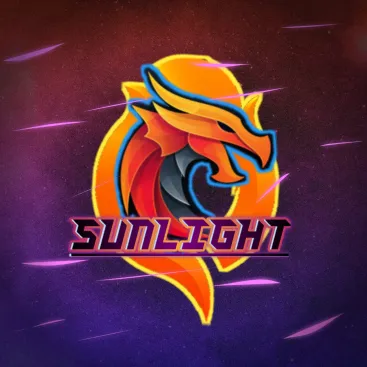

MY PROJECTS

At my first hackathon, Hack Canada, I collaborated with an amazing team to develop StreetSense, a real-time AI-powered navigation tool for the visually impaired. The project aimed to make urban navigation safer and more independent for those with visual challenges.
We built the backend using Python and Flask, integrated with YOLOv3 for object detection, OpenCV for image processing, and TensorFlow Lite for efficient on-device inference. Our goal was to detect crosswalks, vehicles, traffic signs, and more, delivering immediate, clear feedback to users.
Modding Beyond Limits - Real-Time Enhancements for Mobile Games The New SunLight Tool (SL Tool) is a powerful mod menu I developed for Android games, primarily using rooted devices and select virtual environments. This tool enhances gameplay by injecting advanced functions, manipulating memory values, and delivering real-time performance improvements for players who want deeper control of their gaming experience. The project was built by identifying in-game values through Game Guardian, then scripting behavioral changes using Lua. Once the memory addresses and value modifications were defined, I integrated them into a sleek and responsive mod menu interface built with C++, commonly used in native Android modifications.
